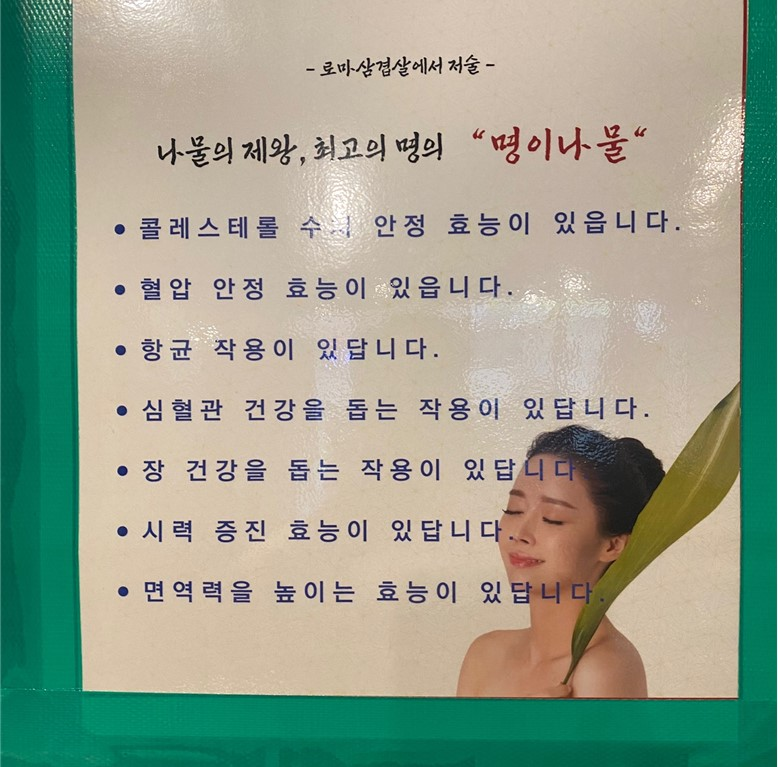
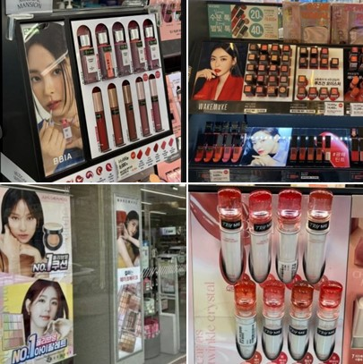

소주
위의 사진은 글보다 사람에 시선이 더 가기 때문에 만약 병의 모양과 색을 안 봤더라면 참이슬인지 몰랐을 거다. 또한 술을 파는데 굳이 여성이 필요할까? 어떤 종류의 소주인지와 영양 정보만 적혀 있어도 충분히 알 수 있다.
명이나물
명이나물의 효능에 대해서 설명하는 글이다. 명이나물과 여성은 무슨 관계인지 모르겠다. 글만 적고 명이나물 사진만 붙어 있어도 알텐데 굳이 여성을 사용한 이유와 약간의 상체만 보이지만 노출이 필요한 걸까?
화장품
화장품 매장에 들어가면 대부분 광고를 하는 사람들은 여성이다. 제품만 보여주면 디자인과 색감에 더 집중할 수 있는데 굳이 모델을 사용했어야 했는지와 화장품은 남녀 모두가 사용하는 것인데 왜 매장에 대부분의 광고는 여성을 중심으로 찍을까?